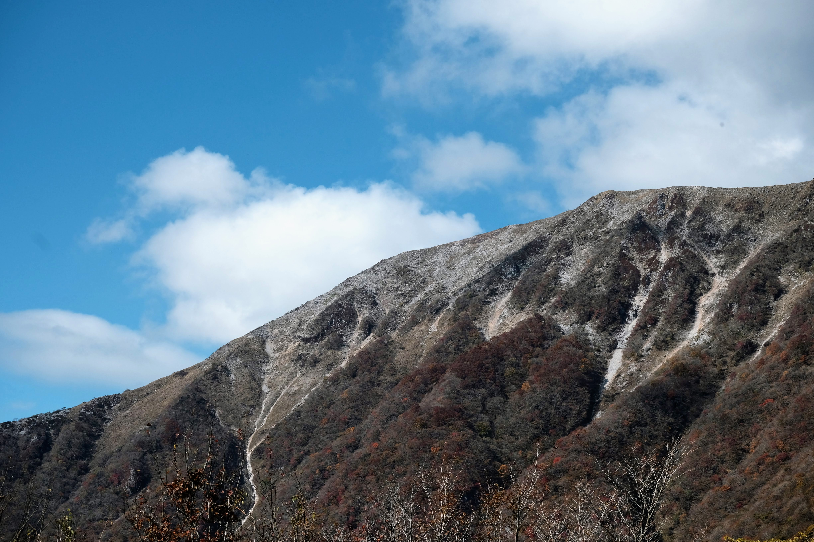

2021年のまとめ
コンテンツ
今年も一年を振り返っていきたいと思います。
大きな変化はあったけどイベントは少なめだったかも。
今年の出来事
1Q(1 月から 3 月)
- 🚗 長野の諏訪湖に行く
- シン・エヴァ良かった
- 🚗 閉園前の志摩マリンランドへ滑り込む
- 何度か面接してもらって、サクラサク

2Q(4 月から 6 月)
- エイプリルフールに退職願を出す紛らわしいやつ
- 🚗 奈良の屏風岩公苑に行く
- 🚗 静岡の浜名湖に行く
- ちょっとしたお休みをいただく
- 🚗 長野の御嶽山に行く
- 自転車で琵琶湖を走るも半分ちょっとでリタイア…
- pop’n music専用コントローラが届くも、予想通りの爆音でそっと箱に戻す
- MIHO MUSEUM に行く
- 遂にデータエンジニア見習いにジョブチェンジ
3Q(7 月から 9 月)
- 🚗 石川の徳光へ行く。いつの間にか映えスポットになっていた
- 🚗 静岡にハンバーグを食べに行く
- ワクチン1回目接種。うだつに加えて腕も上がらなくなった
- 苔リウムに手を出す
- 🚗 長野の八島ヶ原湿原へ行く
4Q(10 月から 12 月)
- BEMANI PRO LEAGUE良かった… 来シーズンも楽しみ
- 🚗 長野の蓼科湖、御射鹿池、白駒池へ行く
- 🚗 滋賀の伊吹山へ行く
- お手軽アウトドアにはまる
- 昇降デスクを買う。もっと早く買っておけばよかった
- 年末の大掃除でこれをやってみたら最高だった
今年遊んだ/遊んでいるゲーム
- beatmania IIDX BISTROVER/CastHour
- pop’n music 解明リドルズ
- Dyson Sphere Program
- Necrobarista - Walking to the Sky✅
- Sekiro✅
- DARK SOULS III
- Tanuki Sunset✅
- 桃太郎電鉄 ～昭和 平成 令和も定番！～
- スーパーマリオ オデッセイ✅
- NUTS✅
- ピクミン3 デラックス
- The Red Strings Club✅
- Dorfromantik
- Pokémon UNITE
- What Comes After✅
- すみれの空✅
- In Other Waters
- ENDER LILIES: Quietus of the Knights✅
- art of rally
- ビビッドナイト
- Mini Metorways
- Axiom Verge 2✅
- Eastward
- CrossCode✅
- Metroid DREAD✅
- Splatoon2 オクト・エキスパンション✅
- Outer Wilds✅
- Inscryption✅
- Cave Story’s Secret Santa✅
- 大逆転裁判1&2✅
- HADES
- あつまれ どうぶつの森
- 天穂のサクナヒメ
(✅はクリア済み)
- 個人的GOTYは Metroid DREAD 。サムスの操作がとても気持ちの良いゲーム
- 今更プレイした Outer Wilds が最高だった。記憶を消して何度でも遊びたい一本。DLCも買ったのでそのうち遊びたい
- Inscryptionは何が起こるか分からない面白さがあったけど、何となく消化不良の一本。。
今年作ったもの
新しいの何も作ってないな…
今年頑張ったこと
- CDMP Associate 認定を取得できたこと
- データエンジニアとして転職できたこと。楽しめる事業で一生懸命取り組めそうで良かった
- お仕事関連のもろもろ。技術的にダメダメなので早く「何も分からん」になれるよう頑張りたい
雑感
- マンションか持ち家か…色々悩んでとりあえず賃貸継続に…
- 昇降デスクは色々と教えてもらって、FlexispotのE7を購入。天板とセットで買ったけど、最終的に現行デスクの足だけ入れ替えた。各所レビューで見かける「細かく高さを調整できる」のがとても良い。もっと早く買っておけばよかった
- 遂にデータエンジニアとしてのキャリアをスタートできた。新しい同僚にも恵まれ、じっくり合流させてもらえた。ありがたい…
2022 年どうするか
- 役割と居場所を確立していくぞ
- 先送りにしてた某イベントをやりきるぞ
今年の一枚
 伊吹山で撮った一枚。それでは皆さん良いお年を！
作成者 tac0x2a
最終更新時刻 2021-12-31